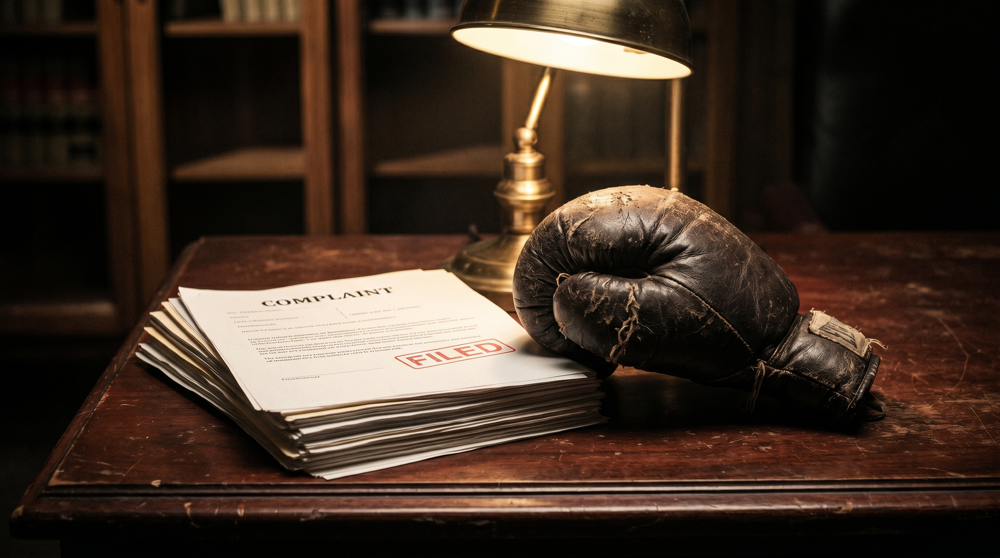
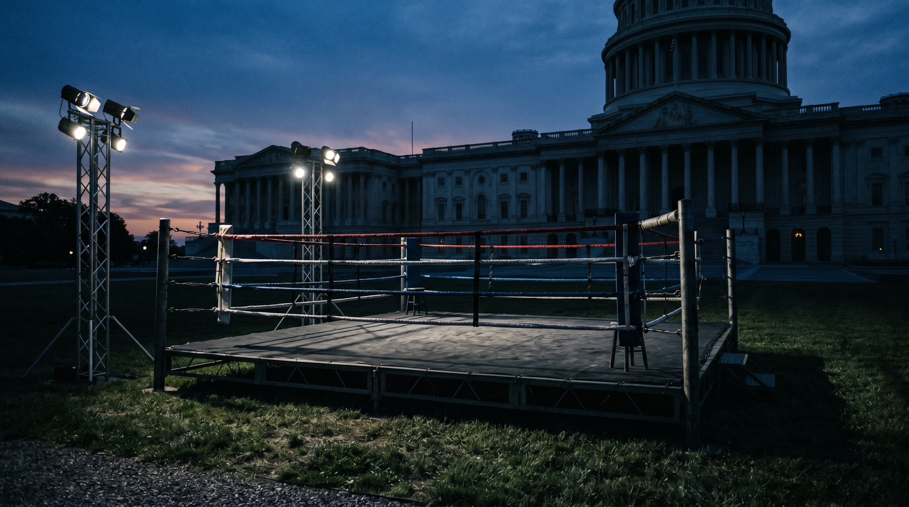

Frank Warren's Queensberry Promotions formally filed a lawsuit on February 25, 2026 against TKO Group Holdings and Saudi Arabia's Sela, seeking up to $1 billion in lost income stemming from the formation of Zuffa Boxing. The claim rests on two distinct contracts: an exclusive agreement Queensberry signed with Sela in September 2023 to provide boxing expertise and access — the partnership that produced the Tyson Fury vs. Francis Ngannou fight in October 2023 — and a separate contract between Queensberry and TKO Group that gave TKO access to Queensberry's existing Sela agreement and its online data infrastructure. Queensberry alleges that TKO and Sela, using privileged contractual knowledge from both agreements, formed Zuffa Boxing behind Queensberry's back — a move that breached both contracts and cut Warren's company out of a venture it helped make possible.
The contract theory is specific. Queensberry isn't just arguing it was wronged in principle; it's arguing TKO and Sela couldn't have built Zuffa Boxing without the roadmap Queensberry provided. That's a harder claim to dismiss than a vague tortious interference argument. TKO hasn't commented publicly. This is the second $1 billion lawsuit TKO faces in the boxing space — the first being Top Rank's Bob Arum, who sued over alleged ESPN+ exclusivity violations. Zuffa Boxing's debut card is April 5 in Riyadh, one day before this newsletter lands in your inbox.
The business angle: Warren is essentially arguing that his company was used as a blueprint — that TKO and Sela extracted the intelligence and relationships from Queensberry's contracts and then replicated the structure under a new entity. If true, it's a cautionary tale about how co-development agreements can be weaponized by the larger party. The damages figure ($1 billion) tracks the projected revenue Queensberry claims it would have earned had it remained the exclusive Saudi boxing partner through the multi-year Sela deal.
While Queensberry litigates TKO in civil court, Frank Warren is simultaneously fighting a commercial war against Eddie Hearn's Matchroom Boxing for dominance of British boxing. The two promoters are battling for the same stable of UK fighters, the same Sky Sports and DAZN broadcast relationships, and the same short-list of arena dates. Hearn recently signed several fighters who had been in Queensberry discussions, and Warren has responded by locking up long-term exclusives. This internal UK boxing arms race is accelerating — and it matters globally because British fighters remain among the most commercially valuable exports in the sport. Who wins the UK talent war will have significant downstream effects on which promoter has the leverage to negotiate the major transatlantic fights of 2027–2028.

The UFC held a fight card at the White House complex in Washington, D.C., exploiting a regulatory gap: the DC Athletic Commission has jurisdiction over events held within the District proper, but the White House grounds — a federal property — fall outside that jurisdiction. The event proceeded without DC Commission oversight, without DC Commission-licensed ringside physicians, and without DC Commission-mandated fighter medical protocols. Dana White framed it as a historic event. Regulatory observers framed it as a precedent that could be replicated by any promotion willing to find federal land in a major market. The broader implication: if federal properties become routine venues for combat sports, the patchwork of state athletic commission oversight — already inconsistent — gets a new and significant loophole.
The Professional Fighters League announced it has retired a significant portion of its outstanding debt obligations, giving the organization a cleaner balance sheet heading into its 2026 season. PFL had been carrying debt from its aggressive international expansion — including the acquisition of Bellator and the launch of PFL Africa and PFL Europe. The debt clearance comes after PFL secured additional investment from its Saudi Arabia-linked backers. The organization is now positioning itself for a potential media rights renegotiation, with its current ESPN deal set to expire. A debt-free (or near-debt-free) PFL is a meaningfully different negotiating partner for a broadcast partner than a leveraged one — and that matters as ESPN, DAZN, and Amazon Prime all look at MMA rights heading into 2027.
| Metric | Detail |
|---|---|
| Queensberry lawsuit filed | Feb 25, 2026 |
| Damages sought | $1 billion |
| Zuffa Boxing debut card | April 5, 2026 (Riyadh) |
| TKO lawsuits (boxing) | 2 ($1B each: Arum + Warren) |
| PFL debt status | Cleared (amount undisclosed) |
| PFL ESPN deal expiry | 2026 |
| UFC White House event jurisdiction | Federal property — no DC Commission |
The Fight Docket | Issue published Monday, April 6, 2026 | Unsubscribe